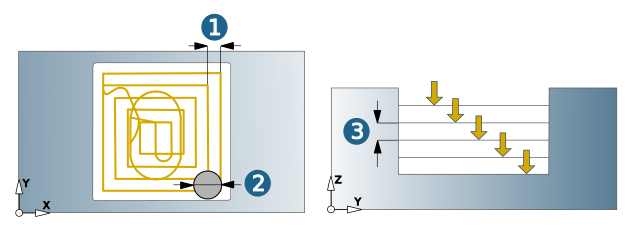
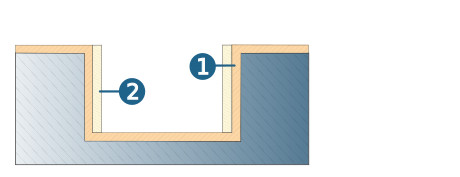
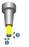
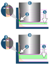
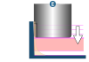
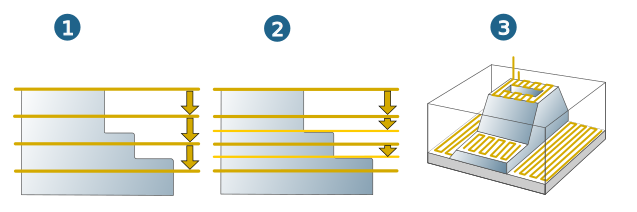

Parameters
Machining area
The vertical machining area is defined by the values for Top and Bottom of the component.
Top (1): maximum Z value in the current job.
Bottom (2): minimum Z value in the current job.
|
Manual top (3) / Manual bottom (4): Specify the values for top and bottom directly on the model by clicking the icon. Manually defined values are not associative. If changes are made to the model geometry, these values will not automatically change as well. |
 |
Infeed
Horizontal stepover (1): Stepover in the XY plane as the distance between the center points of two adjacent milling tool paths.
Stepover (factor of diameter) (2): Horizontal stepover as a factor of the milling tool diameter.
Vertical stepdown (3): Stepdown to the next machining plane, from the Z direction of the active frame.
|  |
Note
If necessary for machining, a switch can be made from the defined horizontal stepover to full cut when calculating the toolpath during the 3D Optimized Roughing cycle.
Scallop height part planes: Only available for Adaptive Pocket machining jobs with automatic Plane level detection. Set the maximum permissible scallop height. The parameter depends on the vertical stepdown that has been defined.
Stepover part planes: Only available for Adaptive Pocket machining jobs with automatic Plane level detection. The value is calculated automatically based on the Scallop height part planes parameter.
Max. step height: Enable if large axial infeeds are possible and, despite this, a continuous allowance is to be achieved. An initial downwards vertical stepdown (1) is executed. The remaining material on inclined walls is then removed from bottom to top according to the defined Max. step height (2). Valid values for the Max. step height parameter must be less than or equal to the Vertical stepdown. The actual step height may differ from the Max. step height.
Example calculation of the actual step height:
Vertical stepdown = 7, Max. step height = 2
7: 2 = 3.5, rounded up = 4.
7:4 = 1.75 = actual step height.
 |
The strategy is particularly suitable for the high-performance machining of sloped walls and flat transitions.
Max. step height not enabled (1), Max. step height enabled (2).
 |
Allowance
Allowance (1) / Additional allowance XY (2): Remaining material to be removed in subsequent finishing. Distance that the cutter must keep from the model geometry.
|  |
Stock removal tolerance
|

|
The two parameters Additional chip thickness (1) and Additional chip depth (2) describe a ring-shaped area at the tool tip. With the values defined for these two parameters, the tool may “overlook” the stock in the XY direction (1) or in the Z direction. Default value for Additional chip thickness = Tool radius * 0.15. Default value for Additional chip depth = Vertical stepdown * 2. The two parameters, together with the parameters
enable an optimized infeed, particularly on inclined pocket walls, and therefore a reduction in machining times. |
Step optimization
Only available for the → → .
Optimize the infeed on inclined pocket walls using the Maximum step down parameter so that individual toolpaths are omitted. The default value for Maximum step down = Vertical stepdown x 2.
For a toolpath to be omitted, all of the following conditions must be met:
-
The distance to the toolpath below is smaller than the Maximum step down.
-
The material removal (even if the toolpath is omitted) is within the range defined by the parameters → and → .
-
The remaining rest material is smaller than the parameter → → .
Note
The following description refers to the internal calculation of the planes that is carried out from bottom to top. The planes themselves are machined in the NC program from top to bottom.
Example:
 |
(1) = Part, (2) = Stock, (3) defined range for Additional chip thickness and Additional chip depth. |
|
(A) Optimization first plane. The remaining rest material is greater than the parameter → → . The toolpath is not omitted. |
|
|
(B) Optimization second plane. The material removal is outside the range defined by the parameters → and → . The toolpath is not omitted. |
|
|

|
(C) / (D) Optimization third and fourth plane.
Both toolpaths are omitted. |
|

|
(E) Optimization fifth plane The distance to the toolpath below is greater than the Maximum step down. The toolpath is not omitted. |
Plane level detection
Off (1): The machining area is roughed from top to bottom with the defined vertical stepdown.
The defined vertical stepdown is kept for each roughing level irrespective of the workpiece surface.
Automatic (2): The machining area is roughed from top to bottom with the defined vertical stepdown.
If the defined vertical stepdown is greater than the distance between two surfaces of the workpiece, the system automatically inserts an intermediate step with a smaller vertical stepdown at the height of the planar surfaces of the workpiece (over the entire machining area).
Optimized - complete (3): The machining area is roughed with the defined vertical stepdown.
If the defined vertical stepdown is greater than the distance between two surfaces of the workpiece, the system automatically inserts an intermediate step with a smaller vertical stepdown at the height of the planar surfaces of the workpiece (not over the entire machining area but just for the planar surfaces).
For the sake of clarity, only the toolpaths on the planar surfaces are shown in the figure.
|  |
Retract mode
The retract mode defines the Z level where the system executes horizontal infeed movements. The mode set is valid for all machining directions (incl. approach, retract and return movement macros) and for the profiles machined with them. Exception: Machining in zigzag mode without return macro.
Clearance distance (1): all retract and infeed movements are executed via the clearance distance. Starting and end positions of an infeed movement in rapid are displaced in Z direction in order to guarantee a collision-free linear infeed movement. The clearance distance is added to these positions.
Clearance plane (2): all retract and infeed movements are executed via the clearance plane.
 |
Safety
Clearance plane and clearance distance apply in the direction of the Z axis of the current frame.
 |
Clearance plane (1): Plane for rapid tool movements. Specification in absolute dimensions Define the clearance plane by right-clicking on the icon. Select a point and confirm the selection. |
Warning
Traversing movements on the clearance plane are not checked with regard to collisions. Therefore, this plane must be placed at a sufficient distance above the surface of the workpiece.
Clearance distance (2): Distance to the current toolpath to be milled. Above the clearance distance, infeed takes place as rapid in the Z direction (A); below the clearance distance infeed takes place at the Z feedrate (B).
(3) Top, (4) Bottom
 |